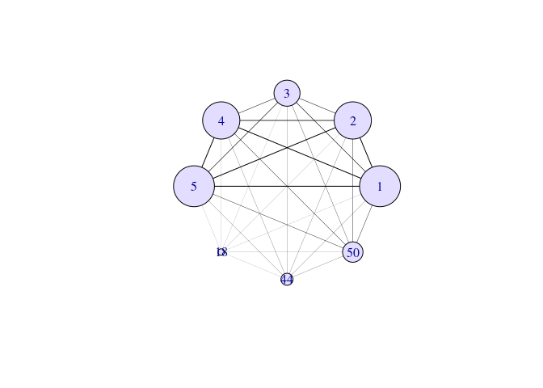

Overview
The swaglm package is a fast implementation of the Sparse Wrapper Algorithm (SWAG) for Generalized Linear Models (GLM). SWAG is a meta-learning procedure that combines screening and wrapper methods to efficiently find strong low-dimensional attribute combinations for prediction. Additionally, the package provides a statistical test to assess whether the selected models (learners) extract meaningful information from the data.
Features
- Efficiently finds a set of low-dimensional learners with high predictive accuracy.
- Follows a forward-step method to iteratively build strong learners.
- Provides a permutation-based statistical test (
swaglm_test) to determine if the obtained models capture meaningful structure in the data. - Uses entropy-based network measures (entropy of frequency and entropy of eigenvalue centrality) to compare SWAG models against randomized models.
Below are instructions on how to install and make use of the swaglm package.
Installation Instructions
The swaglm package is currently only available on GitHub.
# Install dependencies
install.packages(c("devtools"))
# Install/Update the package from GitHub
devtools::install_github("SMAC-Group/swaglm")
# Install the package with Vignettes/User Guides
devtools::install_github("SMAC-Group/swaglm", build_vignettes = TRUE)Getting started
library(swaglm)
# Simulated data
n <- 2000
p <- 50
X <- MASS::mvrnorm(n = n, mu = rep(0, p), Sigma = diag(rep(1/p, p)))
beta <- c(-15, -10, 5, 10, 15, rep(0, p-5))
# generate from logistic regression model
z <- 1 + X %*% beta
pr <- 1 / (1 + exp(-z))
set.seed(12345)
y <- as.factor(rbinom(n, 1, pr))
y <- as.numeric(y) - 1
# Run SWAG
swaglm_obj <- swaglm(X = X, y = y, p_max = 20, family = binomial(),
alpha = 0.15, verbose = TRUE, seed = 123)## Completed models of dimension 1
## Completed models of dimension 2
## Completed models of dimension 3
## Completed models of dimension 4
## Completed models of dimension 5
## Completed models of dimension 6
## Completed models of dimension 7
## Completed models of dimension 8
print(swaglm_obj)## SWAGLM results :
## -----------------------------------------
## Input matrix dimension: 2000 50
## Number of explored models: 136
## Number of selected models: 25
## Number of dimensions explored: 8
# plot network
swaglm_network_obj = compute_network(swaglm_obj)
plot(swaglm_network_obj, scale_vertex = 1)
# Run statistical test
B=20
test_results <- swaglm_test(swaglm_obj, B = B, verbose = TRUE)
# View p-values for both entropy-based measures
print(test_results)Find vignettes with detailed examples as well as the user’s manual at the package website.
How the statistical test works
The function swaglm_test() performs a permutation test to evaluate whether the selected variables contain meaningful information or are randomly selected.
Null Hypothesis: The selected models are no different from randomly chosen ones.
Procedure:
The response variable is shuffled to break its true relationship with predictors.
SWAG is applied to these shuffled datasets.
The entropy of variable frequency and eigenvalue centrality is computed for the null models.
p-values are computed by comparing the SWAG network with these null models.